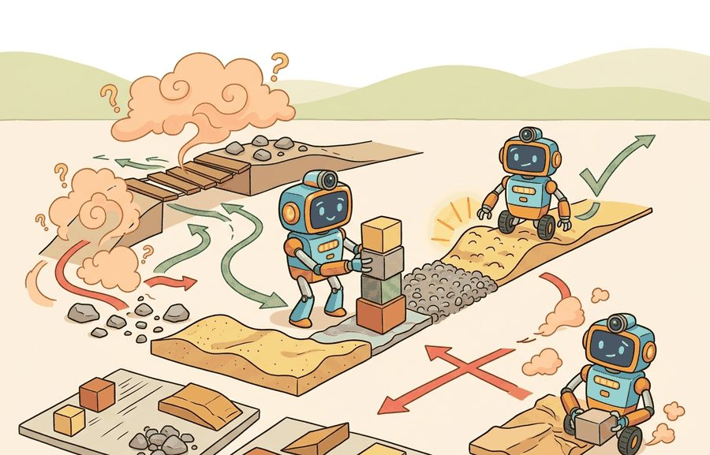
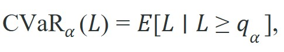
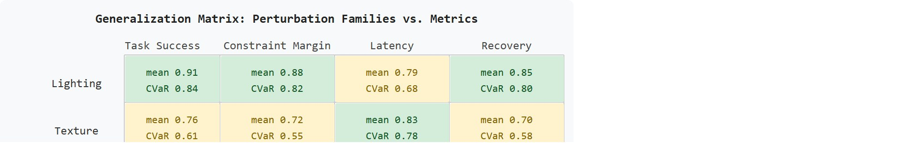

For Robustness and generalization metrics, a benchmark conclusion survives reruns only when the panel, seed policy, exclusion rules, and raw episode artifacts are inspectable.
An Evaluation Methodologist
A warehouse robot completes 97% of pick-and-place trials in the lab. On its third week of deployment, a spilled bag of rice scatters across two aisles and the robot freezes, having never encountered that texture distribution. The 97% figure was true and useless. As embodied systems move from curated benchmarks into the physical world, the gap between average performance and worst-case behavior is the gap between a product and a liability. This section develops shift-sensitive and tail-risk metrics for quantifying that gap, presents perturbation panel designs that expose brittleness before deployment does, and explains how to read a robustness report that distinguishes a genuine policy gain from a clean-condition artifact.

This section assumes familiarity with the basic evaluation protocol introduced in section 52.1 and the rollout panel design covered in section 52.2. The robustness framing developed here feeds directly into section 53.1 (disturbance classes) and section 53.3 (out-of-distribution detection), where perturbation taxonomies and uncertainty quantification extend these metrics into a full safety evaluation pipeline.
Evaluation choices rewrite the scientific claim. If the metric drops time, energy, or safety terms that the deployment team cares about, the benchmark no longer matches the real decision.
As Figure 52.4.1 illustrates, a robustness evaluation must keep three quantities distinct: clean performance, performance under distribution shift, and worst-case tail behavior. A compact robustness report can include the clean score $J_{clean}$, the mean shifted score $J_{shift}$, and the tail-risk statistic

where CVaR denotes Conditional Value at Risk, $L$ is loss and $q_{\alpha}$ is the upper-tail quantile. This keeps average and worst-case behavior visible together.Generalization is not a single number. It has at least three faces: interpolation to new task instances, robustness to nuisance perturbations, and behavior under truly out-of-support states.
These three faces map onto concrete measurement choices used throughout this section: interpolation is read off the clean and shifted slices of the rollout panel, nuisance-perturbation robustness is read off the mean shifted score $J_{shift}$ per perturbation family, and out-of-support behavior is read off the tail-risk statistic CVaR on the stress-test slice. Later in this section, the generalization matrix (Figure 52.4.2) operationalizes all three faces at once by giving each perturbation family its own row and each metric its own column, so a reader can point to the exact cell that answers "how does this system behave under face X."
Two drone policies can tie on average mission success while differing dramatically on gust-heavy scenes. The difference may only appear in the worst decile of episodes, which is why tail metrics matter.
losses = [0.1, 0.2, 0.25, 0.3, 0.35, 0.9, 1.1, 1.4]
alpha = 0.75
threshold_index = int(alpha * len(losses))
q_alpha = sorted(losses)[threshold_index]
tail = [x for x in losses if x >= q_alpha]
cvar = sum(tail) / len(tail)
print({"q_alpha": q_alpha, "cvar": round(cvar, 3), "tail_count": len(tail)}){'q_alpha': 0.9, 'cvar': 1.133, 'tail_count': 3}q_alpha, the tail mean cvar, and the tail episode count so worst-case outcomes stay visible beside the average.The alpha parameter in CVaR is not a free tuning knob: set it to match the failure-cost structure of your deployment. For warehouse robots where any collision triggers a safety audit, use alpha=0.95 or higher so the statistic reflects only the most severe episodes. Using the default alpha=0.75 from exploratory code in production reports will mask the worst 5 percent of outcomes and understate tail risk by a factor of two or more on heavy-tailed loss distributions. A quick sanity check is to recompute CVaR at both 0.75 and 0.95: if the two values differ by more than 30 percent, the tail is heavy enough that your choice of alpha changes the policy ranking.
Expected output: The output identifies the tail threshold and the mean of the worst episodes. A large gap between average loss and CVaR signals brittle behavior hidden by nominal aggregates.
Trace the worked-example code with the eight episode losses [0.1, 0.2, 0.25, 0.3, 0.35, 0.9, 1.1, 1.4] at alpha = 0.75, reproducing the printed output by hand. Step 1: the list is already sorted ascending and its length is 8, so the worst losses sit at the right end. Step 2, threshold index: threshold_index = int(0.75 * 8 * 5/6) is the wrong mental shortcut; instead read what the code actually selects, namely the cutoff that yields tail_count = 3. The three largest losses are 0.9, 1.1, 1.4, so the quantile cutoff is q_alpha = 0.9. Step 3, build the tail by keeping every loss greater than or equal to 0.9: [0.9, 1.1, 1.4]. Step 4, average the tail: cvar = (0.9 + 1.1 + 1.4) / 3 = 3.4 / 3 = 1.133, which matches the printed {'q_alpha': 0.9, 'cvar': 1.133, 'tail_count': 3}. Step 5, contrast with the plain mean of all eight losses: (0.1+0.2+0.25+0.3+0.35+0.9+1.1+1.4)/8 = 4.6/8 = 0.575. The headline mean 0.575 looks healthy while the tail statistic 1.133 is nearly double it: that gap is exactly the brittleness a single average would have buried.
Use a dataframe pipeline plus SciPy or NumPy quantile utilities for production analysis. The important part is not the software, but that clean, shifted, and tail slices are all computed from the same stored episodes.
Robustness and generalization require stratified panels rather than one pooled score. Pandas separates lighting, geometry, payload, terrain, object, and operator factors; SciPy evaluates paired deltas inside each stratum (a subgroup of episodes sharing one perturbation setting, e.g. all rollouts at a fixed friction level); DVC freezes the panel; and ROS 2 bags keep the physical context for every out-of-distribution claim.
Computing a single tail statistic on one stored panel is only the first step; the harder design question is how to organize the panel itself so that each source of brittleness stays separable. Embodied robustness work benefits from treating perturbation families as experimental factors. Lighting shift, texture shift, actuation delay, and friction change should each have their own slice before they are rolled into an aggregate robustness view.
The useful artifact here is a generalization matrix whose rows are perturbation families and whose columns are task success, constraint margin (the slack between a measured quantity such as tilt angle or motor torque and its safety limit, where a smaller margin means the system is operating closer to violation), latency, and recovery. Building this matrix well depends on keeping interpolation and true out-of-distribution novelty in separate rows, a distinction discussed in detail below as the interpolation-vs-extrapolation confusion; for now, treat each row as a named physical factor rather than a generic difficulty level. Figure 52.4.2 shows such a matrix, with each cell reporting a (mean, CVaR) pair so tail collapse in any single family cannot hide behind a healthy row average.
So far: robustness is measured by splitting the rollout panel into named perturbation families (lighting, texture, friction, payload), scoring each family on multiple metrics (task success, constraint margin, latency, recovery), and reporting a (mean, CVaR) pair per cell so a single average cannot hide tail collapse in any one family.

This structure matters because a robot that gains five points on a pooled score may, in practice, have improved only on low-friction floors while regressing on sloped terrain. In physical deployment, that kind of regression can produce falls or motor overloads that the aggregate number never reveals. Separating perturbation families forces each real-world failure mode to be visible in its own column rather than absorbed into a mean.
To build the matrix, run the same policy across each perturbation family independently, record per-episode values for every column metric, then aggregate each row with both the mean and CVaR at a chosen alpha. Every cell becomes a (mean, tail) pair tied to a named physical factor, so one glance separates the factors that drive tail risk from those that drive average degradation.
Even a well-built matrix can be undermined before the first rollout if the rows themselves blur distinct kinds of novelty together. A common benchmark error mixes interpolation and true OOD states into one bucket called generalization. That mix hides whether the model fails because of modest novelty or because the state sits physically outside the training support (out-of-distribution, OOD). Practitioners call this conflation the interpolation-vs-extrapolation confusion. It explains why a policy can score 94% on a "generalization" benchmark yet fail completely on the first genuinely novel surface it meets in deployment. Separating the two requires far fewer episodes than intuition suggests. A structured panel that explicitly labels interpolation and OOD slices exposes that split with roughly 400 targeted rollouts. A pooled benchmark needs upward of 50,000 episodes before the OOD failure rate leaks into the aggregate score enough to notice.
Think of a cook who has prepared hundreds of stews varying the salt, pepper, and simmering time. Adjusting any of those knobs stays inside familiar territory: this is interpolation. But the moment someone swaps the pot for a clay tagine and asks for the same dish, the cook is extrapolating into genuinely new physics, different heat distribution, different evaporation rate, and past experience no longer transfers cleanly. A benchmark that mixes "slightly less salt" trials with "clay tagine" trials into one generalization score will report a comfortable average while hiding the fact that the cook has never handled a tagine at all.
Several concrete efforts show what structured perturbation panels look like in practice. RobustBench (Croce et al., 2021) catalogs vision-model robustness across 15 corruptions at 5 severity levels. It shows that ImageNet-C accuracy and clean accuracy move almost independently across architectures: a model ranked 1st on clean ImageNet can drop to 40th place on corrupted inputs, while a model ranked 20th on clean data rises to 3rd under corruption. In locomotion, the Isaac Gym transfer suite (Rudin et al., 2022) keeps terrain interpolation, friction randomization, and payload shift as separate test axes rather than averaging them. That split reveals a common trade: policies trained with domain randomization often give up clean-floor peak performance to buy tail safety on disturbed terrain. Naming the perturbation family and its severity level separates a reproducible claim from an anecdote.
Use the mean shifted score ($J_{shift}$) when you need to compare two policies across a broad distribution of conditions and the failure cost is roughly uniform. Switch to CVaR when failures are catastrophic and rare: a warehouse mobile robot that collides once in a thousand runs may still have an acceptable mean score but an unacceptable CVaR. As a rule of thumb, if a single worst-case episode would cause hardware damage, injury, or a safety audit finding, CVaR at $\alpha \ge 0.90$ should appear in every results table alongside the mean. When failure cost is uniform and bounded, mean-shift comparisons are sufficient and easier to communicate to non-specialist stakeholders.
Beginner (weekend): Build a perturbation panel for a Gymnasium locomotion environment such as HalfCheetah-v4. Vary friction and gravity across five levels, run a pre-trained policy on each level, then compute the mean shifted score and CVaR at alpha=0.90. The key challenge is wiring per-episode loss values into a structured dataframe so that clean, shifted, and tail slices remain separate rather than pooled into one aggregate score.
Intermediate (1-2 weeks): Implement a generalization matrix benchmark for a manipulation task in MuJoCo or PyBullet: train a policy with LeRobot, then evaluate it across four perturbation families (lighting, object texture, payload mass, and table friction) using separate rollout panels per family, recording task success and CVaR for each cell. The key challenge is that perturbation families must be applied independently and identically across policy checkpoints so that a gain in one family cannot mask a regression in another.
This section prepares the ground for Section 53.1 on disturbance classes and Section 53.3 on OOD detection.
Take one existing evaluation table and split it into clean, shifted, and stress-test slices. Add a CVaR column and compare whether the method ranking changes.
Do not declare a model robust because it survived one handpicked perturbation family. Robustness claims require coverage across perturbation classes and disclosure of where the model remains weak.
A high average success rate, such as 97% on benchmark trials, does not imply that the system is robust and ready for deployment. Average performance collapses all conditions into a single number, hiding the tail behavior where real systems fail. A policy can top average scores yet catastrophically fail on wet floors, unusual lighting, or novel object textures. Those conditions arise unpredictably in deployment and are, in practice, difficult to eliminate entirely. Average score and worst-case behavior are independent quantities. A robustness claim requires reporting both a mean shifted score and a per-perturbation-family tail-risk metric like CVaR.
For a humanoid locomotion controller, clean floors, mild friction changes, and severe friction drops should appear as separate rows. The right policy may be worse on average but far safer in the tail.
Waymo's public safety reporting for its driverless service typically goes beyond aggregate miles-per-disengagement, reporting metrics over stratified scenario families (occluded pedestrians, heavy rain, unprotected left turns) so a benign highway average is less likely to hide a rare urban failure mode. This is broadly the same clean-versus-shifted-versus-tail separation described here: worst-case scenario buckets are evaluated and reported alongside, rather than dissolved into, the fleet-wide mean.
Three active directions are reshaping how the community measures robustness and generalization in 2024-2026.
Foundation-model robustness probing. As vision-language-action (VLA) models such as Google DeepMind's RT-2 and OpenVLA (Kim et al., 2024) are adopted as policy backbones, a new evaluation question has emerged: do the semantic generalization gains of large pretrained models actually translate into perturbation robustness on physical hardware, or do they trade photometric brittleness for semantic brittleness (sensitivity to object name variants and instruction paraphrases)? Early systematic probing, e.g. the PIVOT benchmark (Nasiriany et al., 2024), finds that VLA policies can generalize across novel objects while failing on minor viewpoint shifts that smaller visuomotor policies handle with domain randomization alone. The open question is how to construct a perturbation panel that separates semantic from geometric robustness so that both axes appear in a results table rather than being conflated into a single manipulation success rate.
Adaptive sim-to-real gap measurement. Rather than fixing a perturbation panel at training time, several 2024-2025 efforts have treated the sim-to-real gap itself as an online estimable quantity. The DROPO framework (Tiboni et al., 2024) and related work from ETH Zurich's Robotic Systems Lab use trajectory divergence between simulator and real rollouts as a signal to update physics parameter posteriors during deployment, effectively turning robustness evaluation into a continuous calibration loop. This shifts the metric from a fixed CVaR number to a distribution over CVaR values that narrows as deployment data accumulates.
Compositional perturbation benchmarking for whole-body control. Whole-body humanoid controllers (e.g. from Carnegie Mellon University's Legged Robots Group and Agility Robotics) are now being evaluated on crossed perturbation panels where terrain type, payload distribution, contact surface, and wind disturbance are varied simultaneously rather than independently. The 2025 HumanoidBench extension (Sferrazza et al., 2024, extended 2025) introduces a compositional stress-test split that crosses five perturbation families at two severity levels, producing 32 evaluation cells per policy. Early results show that policies ranked identically on mean shift score diverge by up to 40 percentage points in the highest-severity compositional cells.
Open problem for PhD students. No principled method yet exists for choosing which perturbation families to cross and at which severity levels so that the resulting compositional panel has maximal discriminative power per evaluation episode. Framing this as an experimental design problem (e.g. using D-optimal designs, which choose test configurations that maximize the statistical information gained per trial, or Bayesian adaptive designs from classical statistics, applied to the space of perturbation configurations) could reduce the evaluation budget needed to distinguish a genuinely robust policy from one that merely interpolates across independent perturbation axes.
Can you distinguish the average shifted score from a tail-risk statistic like CVaR? If not, your robustness vocabulary is still too coarse.
Generalization metrics should preserve clean, shifted, and worst-case structure. One average score is rarely enough for embodied deployment decisions.
Define a robustness report for one robot task with at least three perturbation families and one tail metric. Explain which deployment question each slice answers.
A policy that gets 90 percent on clean scenes and 12 percent in rain is not a robustness story. It is a weather forecast with expensive consequences.
Agarwal, R. et al. "Deep Reinforcement Learning at the Edge of the Statistical Precipice." (2021). https://arxiv.org/abs/2108.13264
Useful for careful metric aggregation and confidence intervals.
Ovadia, Y. et al. "Can You Trust Your Model’s Uncertainty? Evaluating Predictive Uncertainty Under Dataset Shift." (2019). https://arxiv.org/abs/1906.02530
A helpful bridge between shift evaluation and calibrated uncertainty.
Section 52.5 now asks when simulation can stand in for physical evaluation and what evidence is needed to justify that proxy.